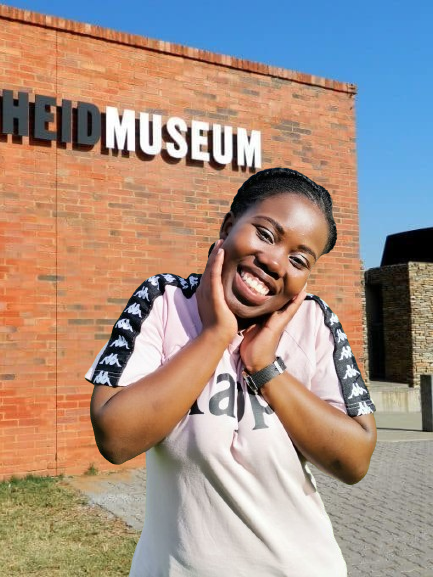

The City I want to visit

I want to visit Cape Town because of their breathtaking natural beauty centered around Table Mountain.
World-class food and wine.
Beautiful beaches.
Historical sites like Robben Island.
V&A Waterfront for shopping and dining. Cape Town is the legislative capital of South Africa. It is the country's oldest city and the seat of the Parliament of South Africa. It is the country's second-largest city, after Johannesburg, and the largest in the Western Cape. The city is part of the City of Cape Town metropolitan municipality.
My Favourite subjects
I competed Financial Accounting at Damelin college doing Bcom Accounting.
I competed Taxation at Damelin college doing Bcom Accounting.
I competed Auditing at Damelin college doing Bcom Accounting.
Historical Places

Interesting Facts
1.Immersive Exhibits and Narrative: The Apartheid Museum offers visitors a highly immersive and thought-provoking experience through its exhibits and narrative. The museum presents the history of apartheid chronologically, from its roots in colonialism to its eventual dismantling and the dawn of democracy in South Africa.
2.Interactive Learning and Engagement: The Apartheid Museum emphasizes interactive learning and engagement, encouraging visitors to actively participate in the exploration and interpretation of its exhibits.
3.Commitment to Memory and Reconciliation: Central to the mission of the Apartheid Museum is its commitment to preserving the memory of apartheid and promoting reconciliation in post-apartheid South Africa.
Interesting Facts
1.Historical Significance: The Market Theatre holds immense historical significance as it emerged during the apartheid era in South Africa. Established in 1976 by Mannie Manim and Barney Simon, it provided a platform for artists of all races to showcase their work, challenging the racial segregation policies of the time.
2.Cultural Diversity and Innovation: The Market Theatre has a reputation for promoting cultural diversity and fostering artistic innovation. It showcases a diverse range of theatrical productions, including plays, musicals, dance performances, and experimental works, reflecting the rich tapestry of South Africa's multicultural society.
3.Community Engagement and Education: In addition to its role as a performance venue, the Market Theatre is actively involved in community engagement and arts education initiatives.
Interesting Facts
1.Conservation Efforts: Many lion parks play a crucial role in lion conservation efforts. With lion populations declining due to habitat loss, human-wildlife conflict, and poaching, lion parks often serve as sanctuaries or breeding centers for these animals.
2.Interaction and Observation: Lion parks provide visitors with the opportunity to observe lions up close in a controlled environment. Visitors may embark on guided safaris or tours conducted by experienced guides who offer insights into lion behavior, social structures, and conservation challenges.
3.Research and Study: Lion parks often serve as research facilities where scientists and conservationists conduct studies on lion behavior, ecology, and genetics. Researchers may study various aspects of lion biology, including hunting behavior, social dynamics within prides, and the impact of human activities on lion populations.